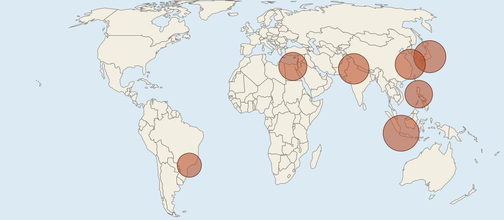

Cities Across the World
Megacities (10 million or more) and metacities (20 million or more) are multiplying, mostly in Asia and Africa.
Part 1 · Hook
Why this matters
Part 2 · Before you start
What this builds on
Part 3 · Prerequisite check
Quick check before you start
1. What is urbanization?
- A rise in the share of a population living in cities
- The spread of farming into new regions
- A fall in a city's population
- The growth of villages into towns
Show the answer
Urbanization is about the share of people who live in cities, not just the number.
- Correct: A rise in the share of a population living in cities:
- The spread of farming into new regions:
- A fall in a city's population:
- The growth of villages into towns:
2. Which describes distance decay?
- Contact between places falls as the distance between them grows
- Places far apart trade more than places close together
- Maps lose accuracy far from the equator
- Cities shrink as they age
Show the answer
The farther apart two places are, the less they usually interact.
- Correct: Contact between places falls as the distance between them grows:
- Places far apart trade more than places close together:
- Maps lose accuracy far from the equator:
- Cities shrink as they age:
Part 4 · See it
See it first

Part 5 · Step by step
How it works, step by step
- Rural-to-urban migration and natural increase run high in many lower- and middle-income countriestheir largest cities pass 10 million people and become megacities
- After 1945, US highways, cheap home loans and cars made long commutes easyfamilies moved from central cities to suburbs: suburbanization
- Homes spread at low density across former farmlandthe metro area sprawls, and most trips need a car
- Offices and stores follow workers and shoppers to the suburbsedge cities grow where highways meet, and boomburbs and exurbs grow beyond them
Part 6 · Key ideas
Key ideas
- A megacity has 10 million people or more; a metacity has 20 million or more. These are conventions, and a city's count depends on where its edge is drawn.
- Most megacities are in Asia (19 of 33 in 2025, UN DESA), and most new ones are growing in lower- and middle-income countries.
- Suburbanization is the movement of people and jobs from central cities to the surrounding suburbs. Low-density spread across the land is urban sprawl.
- An edge city is a suburban center of offices and stores with more jobs than homes. An exurb is a rural-looking area beyond the suburbs where commuters live. A boomburb is a fast-growing suburb that has become a large city of its own.
Part 7 · Misconception
A common mistake
The wrong idea: An edge city is just a big suburb where people live.
What actually happens: An edge city is a job center: office towers, malls and hotels, usually at a highway junction, with more jobs than bedrooms. Tysons, Virginia, outside Washington, D.C., is an example. A suburb where most people live and leave each morning for work is not an edge city.
Part 8 · Check yourself
Check yourself
Exam-style questions. Anything you miss goes into your review queue.
Map
Seven of the world's largest cities, 2025

Urban area population, 2025
- 102040million people (circle area shows the value)
1. Which statement best describes the pattern of the largest cities on the map?
- Most are in South, Southeast and East Asia
- Most are in North America and western Europe
- They are spread evenly across the six inhabited continents
- Most are in South America, south of the equator
Show the answer
Five of the seven circles sit in Asia: Jakarta, Tokyo, New Delhi, Shanghai and Manila. One is in Africa and one in South America.
- Correct: Most are in South, Southeast and East Asia: Right: the map shows most of the largest cities in Asia.
- Most are in North America and western Europe: No circle on the map is in North America or Europe.
- They are spread evenly across the six inhabited continents: Asia has five of the seven; that is a cluster, not an even spread.
- Most are in South America, south of the equator: One circle, Sao Paulo, is in South America.
2. Using the common thresholds of 10 million for a megacity and 20 million for a metacity, which city on the map is a megacity but not a metacity?
- Manila
- Cairo
- Jakarta
- Sao Paulo
Show the answer
Sao Paulo's circle stands for about 18.9 million people: above 10 million, below 20 million. The other cities shown are above 20 million.
- Manila: Manila's 24.7 million is above 20 million, so it counts as a metacity.
- Cairo: Cairo's 25.6 million is well above 20 million.
- Jakarta: Jakarta's 41.9 million is the largest on the map.
- Correct: Sao Paulo: Right: 18.9 million is a megacity, not yet a metacity.
Data
Metro Area M: where people live and work
| Part of Metro Area M | Residents 1950 | Residents 1980 | Residents 2010 | Jobs 2010 |
|---|---|---|---|---|
| Central city | 900 | 800 | 750 | 420 |
| Inner suburbs | 200 | 700 | 900 | 260 |
| Northgate (at two highway junctions) | 5 | 20 | 30 | 120 |
| Outer ring of farms and large lots | 40 | 90 | 210 | 25 |
Invented data for practice.
3. Which trend in residents from 1950 to 2010 does the table show?
- The suburbs grew while the central city shrank
- The central city grew faster than the suburbs did
- The outer ring of farms lost residents each decade
- Residents spread evenly, with each part gaining about the same
Show the answer
Inner suburbs rose from 200,000 to 900,000 while the central city fell from 900,000 to 750,000: suburbanization.
- Correct: The suburbs grew while the central city shrank: Right: growth moved outward, the pattern of suburbanization.
- The central city grew faster than the suburbs did: The central city lost residents, from 900 to 750 thousand.
- The outer ring of farms lost residents each decade: The outer ring grew, from 40 to 210 thousand.
- Residents spread evenly, with each part gaining about the same: The parts changed very differently, from a fall to more than a fourfold rise.
4. In 2010, Northgate had 30,000 residents and 120,000 jobs. Which term best fits Northgate?
- Exurb
- Boomburb
- Bedroom suburb
- Edge city
Show the answer
Northgate has four jobs for every resident and sits at two highway junctions: a suburban job center, an edge city.
- Exurb: An exurb is a rural-looking area of commuters' homes, with few jobs.
- Boomburb: A boomburb is a large, fast-growing suburban city of residents; Northgate has few residents.
- Bedroom suburb: A bedroom suburb has more residents than jobs, the reverse of Northgate.
- Correct: Edge city: Right: more jobs than residents at a highway junction is an edge city.
5. Tysons, Virginia, near Washington, D.C., has more office space than many downtowns and far more jobs than residents. Which term fits Tysons?
- Edge city
- Exurb
- Metacity
- Squatter town
Show the answer
A suburban center of offices and stores, with more jobs than homes, at a highway junction, is an edge city.
- Correct: Edge city: Right: an edge city is a job center in the suburbs.
- Exurb: An exurb is a rural-looking commuter area, not an office center.
- Metacity: A metacity is a whole urban area of 20 million or more.
- Squatter town: Tysons is a planned office and shopping center, not self-built housing.
6. Mesa, Arizona, a suburb of Phoenix, grew from a small town to more than 500,000 people by the 2020 US census, yet Phoenix is still the main city of the region. Which term fits Mesa?
- Edge city
- Exurb
- Megacity
- Boomburb
Show the answer
A suburb that grows very fast into a large city of its own, but is not the region's main city, is a boomburb.
- Edge city: An edge city is mainly a job center; Mesa is mainly where people live.
- Exurb: An exurb is rural-looking with homes on big lots; Mesa is a large city.
- Megacity: A megacity has 10 million or more.
- Correct: Boomburb: Right: Mesa is a large, fast-growing suburban city.
Part 9 · Summary
Summary
Part 10 · Up next
What comes next
Part 11 · Connections